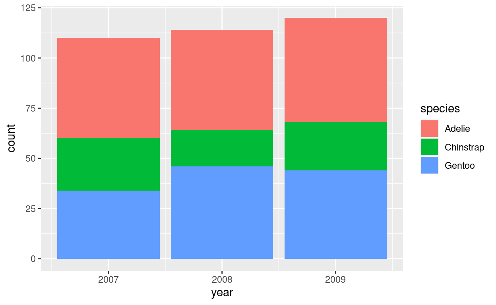
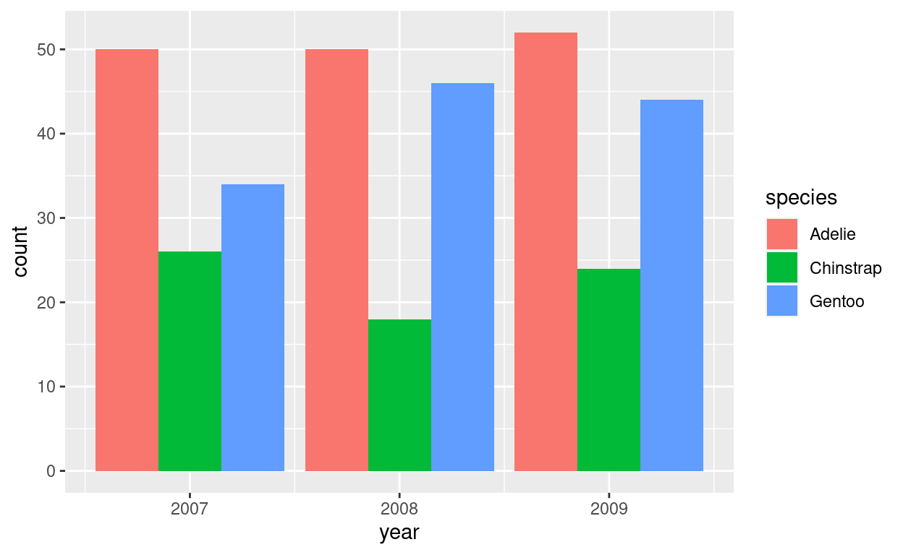
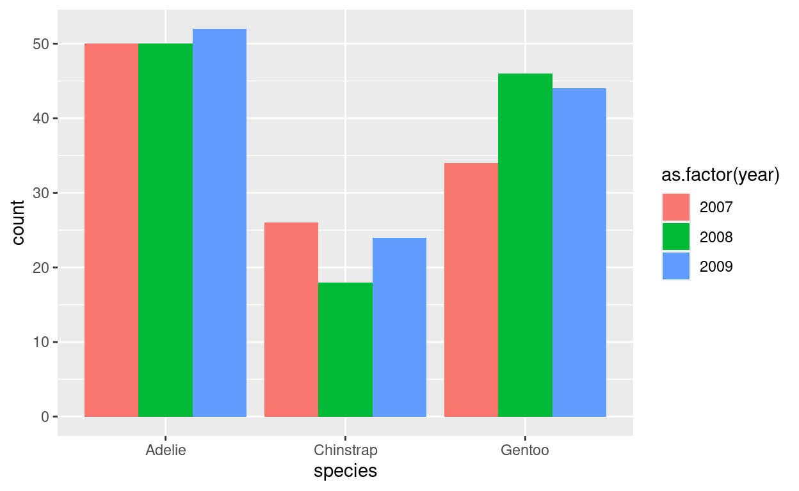
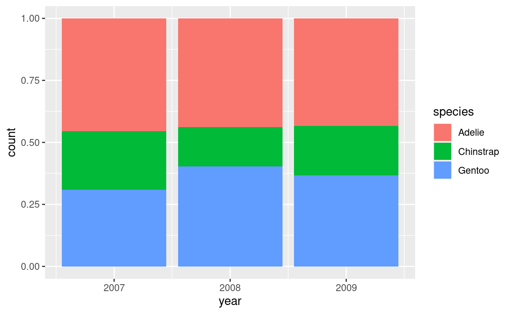
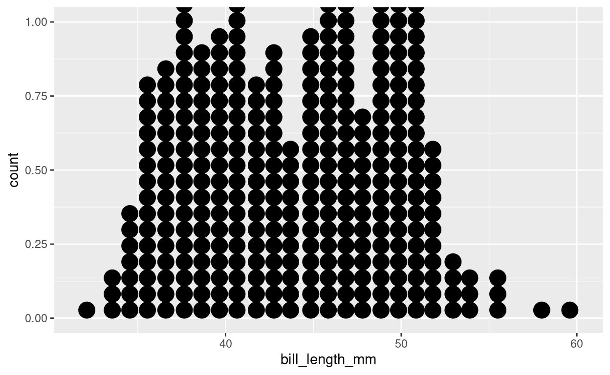
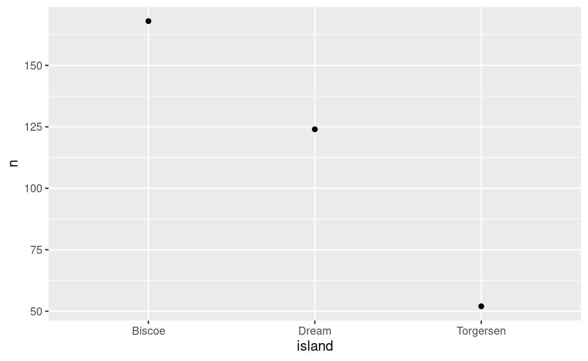
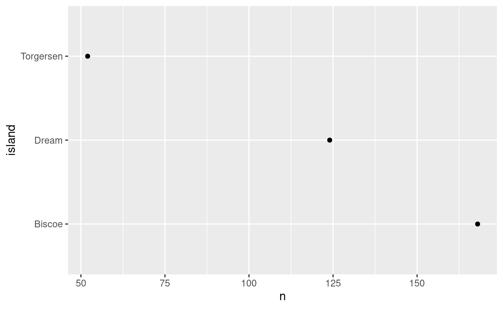
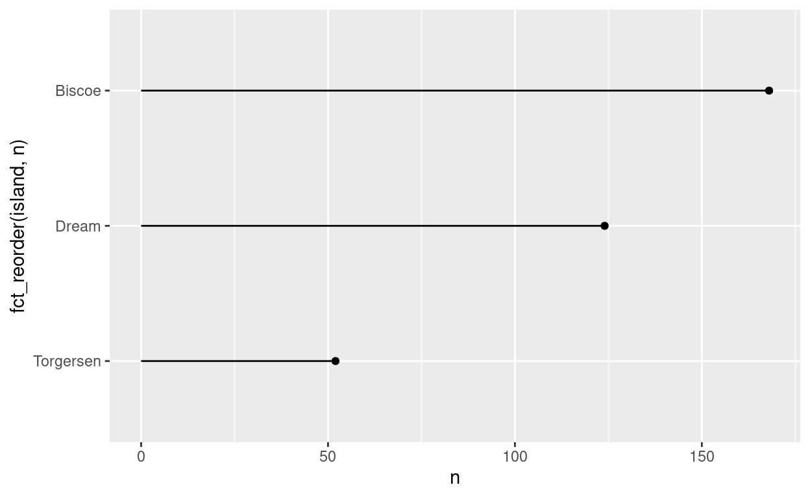

Introduction
This exercise covers visualizing amounts and proportions using bar plots and dot plots. These are used to plot counts and proportions for categorical data.
Set-up
Load {tidyverse} and {palmerpenguins}.
library(tidyverse)
library(palmerpenguins)Bar plots
Calculate counts
The geom_bar() function will automatically count the numbers of observations of a categorical variable.
Plot the number of penguins recorded from each island.

penguins %>%
ggplot(...)penguins %>%
ggplot(aes(x = island)) +
geom_bar()Use existing counts
If the amount of each category are already counted, you can use geom_col() to produce the same plot. First, we’ll create a new object that counts the observations of each category.
Create an object called penguin_island that counts the number of penguins recorded on each island.
penguin_island <- penguins %>%
...Now plot the penguin_island data.
penguins %>%
ggplot(...)penguin_island %>%
ggplot(aes(x = island, y = n)) +
geom_col()Grouped bar plots
Bar plots can be grouped by another variable. The position argument controls how the groups are represented.
Stacked bar plots
By default, group variables are stacked on top of one another, so the total bar height is the same as a plot with no grouping.
Plot the penguin numbers for each year and color the bar area based on species.

penguins %>%
ggplot(...)penguins %>%
ggplot(aes(x = year, fill = species)) +
geom_bar()To be explicit, the default position is “stack”.
penguins %>%
ggplot(aes(x = year, fill = species)) +
geom_bar(position = "stack")Dodged bar plots
To place grouped variables side-by-side, use the “dodge” value for position.
Add position = "dodge" to the plot.

penguins %>%
ggplot(...)penguins %>%
ggplot(aes(x = year, fill = species)) +
geom_bar(position = "dodge")Ugh, that’s not very appealing. Try switching year and species.
Make species the x variable and year the grouping variable. Hint: you’ll need to make year a factor for this to work.

penguins %>%
ggplot(...)penguins %>%
ggplot(aes(x = species, fill = as.factor(year))) +
geom_bar(position = "dodge")Compare it to the previous plot. Why is this plot better?
Proportional bar plots
If we are interested in plotting the relative proportions of each type rather than the absolute amounts, we can set position to fill.
Set position = "fill".

penguins %>%
ggplot(...)penguins %>%
ggplot(aes(x = year, fill = species)) +
geom_bar(position = "fill")This shows clearly that the researchers have measured the same proportion of Adelie penguins across the years. This fact was not obvious with the previous plots.
Dot plots
Tale of two dot plots
Dot plots replace the bars with dots. There are two ways to do this. The first is related to a histogram and uses geom_dotplot(). Note that this plots continuous data.
penguins %>%
ggplot(aes(x = bill_length_mm)) +
geom_dotplot()## Bin width defaults to 1/30 of the range of the data. Pick better value with `binwidth`.
When we say dot plot, we’ll be referring to the Cleveland dot plot, which just places a single dot at the amount value. To create this kind of plot, use geom_point(). Note that you have to use the pre-calculated count data for this.
penguin_island %>%
ggplot(aes(x = island, y = n)) +
geom_point()
Flipping coordinates
Dot plots are typically oriented with the dependent variable on the x axis, which requires using coord_flip().
Flip the coordinates of the previous plot.

penguin_island %>%
ggplot(...)penguin_island %>%
ggplot(aes(x = island, y = n)) +
geom_point() +
coord_flip()Add a reference line
The dots alone can make the dot plots difficult to visualize the data. It may be beneficial to add a reference line extending from an origin to the data point. To do this, we need to use the geom_linerange() and set the ymin to the origin (usually 0) and the ymax to the count variable.
penguin_island %>%
ggplot(aes(x = island, y = n)) +
geom_point() +
geom_linerange(aes(ymin = 0, ymax = n)) +
coord_flip()
Reordering categories
While the counts per island are ordered, they’re order from fewest to most. What if we want to order them from most to fewest number of penguins per island.
Reorder the islands based on the counts. You can either do this in a mutate() before the plot or do it in the ggplot().

penguin_island %>%
ggplot(...)penguin_island %>%
ggplot(aes(x = fct_reorder(island, n), y = n)) +
geom_point() +
geom_linerange(aes(ymin = 0, ymax = n)) +
coord_flip()Wrap-up
You are now a certified distribution visualization expert!